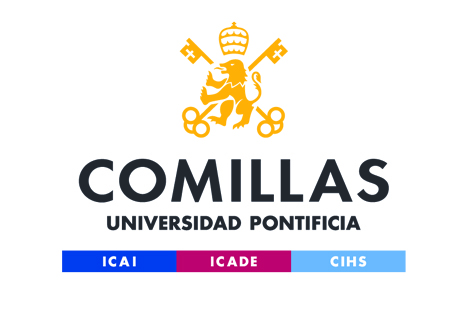
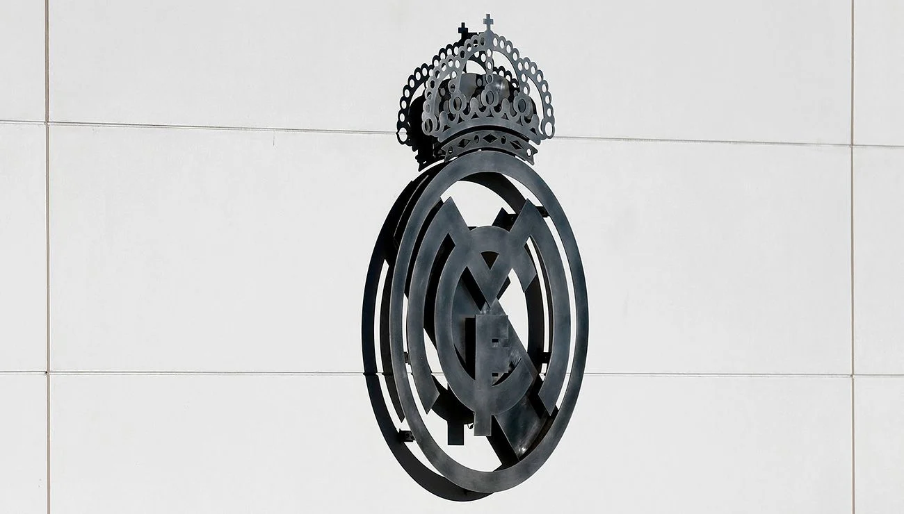
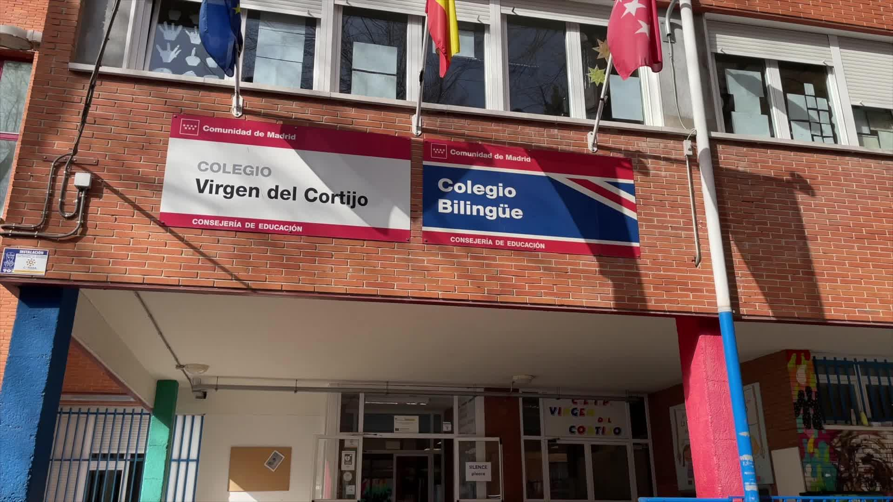
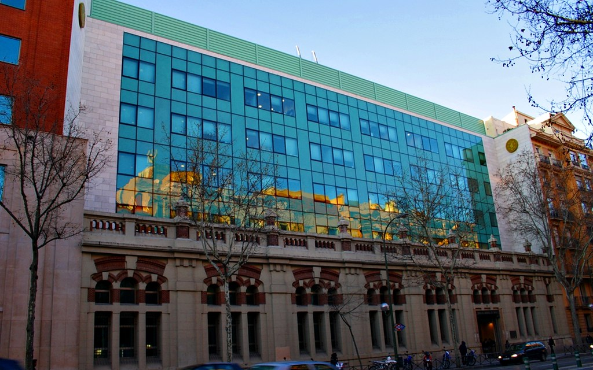
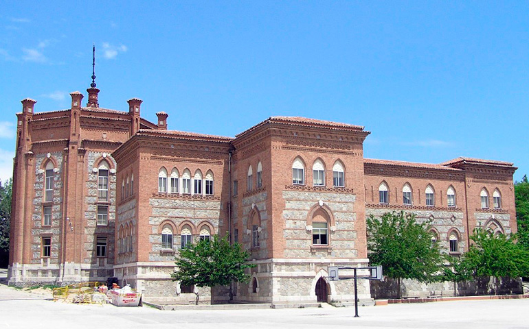
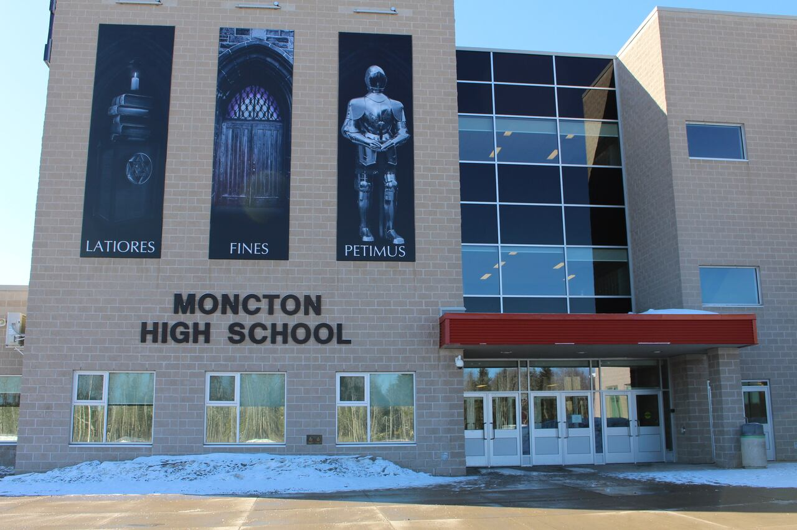
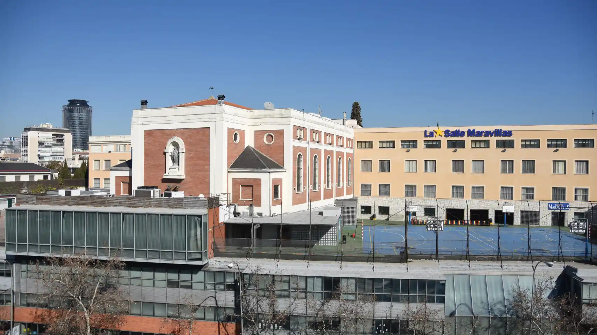

Trayectoria
Un resumen de lo que ha sido mi vida (productiva) hasta ahora.
Experiencia
- Assistant Professor, Universidad Pontificia Comillas, 2023-Presente
- Elegido por proficiencia en inglés y buen desempeño estudiantil
- Coordinación con el profesor titular varias veces por semana
- Profesor particular, Academia Real Madrid
- Mejoría de notas del 20% en las primeras semanas
- Flexibilidad de horarios, adaptabilidad
- Jefe de Matemáticas, voluntariado CEIP Virgen del Cortijo
- Clases gratuitas a alumnos en riesgo de exclusión social
- Mejoría de notas del 30% a lo largo del programa
- Alumnos interesados en las matemáticas, anteriormente indeferentes



Estudios
- Doble Grado en Ingeniería de Telecomunicaciones y Business Analytics, Universidad Pontificia Comillas, 2021-2026.
- Percentil 20% de mi promoción
- Doble diploma de Comunicación y Habilidades Profesionales
- Bachillerato Internacional, Diploma Bilingüe, Colegio Nuestra Señora del Recuerdo, 2019-2021.
- Nota de 40/45, equivalente español: 13,1
- Elegido como mejor estudiante-deportista, segundo premio al mejor compañero, votado por alumnos.
- Intercambio, Moncton High School (Canada), 2017-2018.
- Independencia, vivir alejado de mi familia en un ambiente radicalmente distinto.
- Adquisición de idiomas, 119/120 en el TOEFL.
- ESO y primaria, Colegio Nuestra Señora de las Maravillas, 2009-2017 2018-2019.
- Gestión de cargas de trabajo
- Trabajo en equipo



